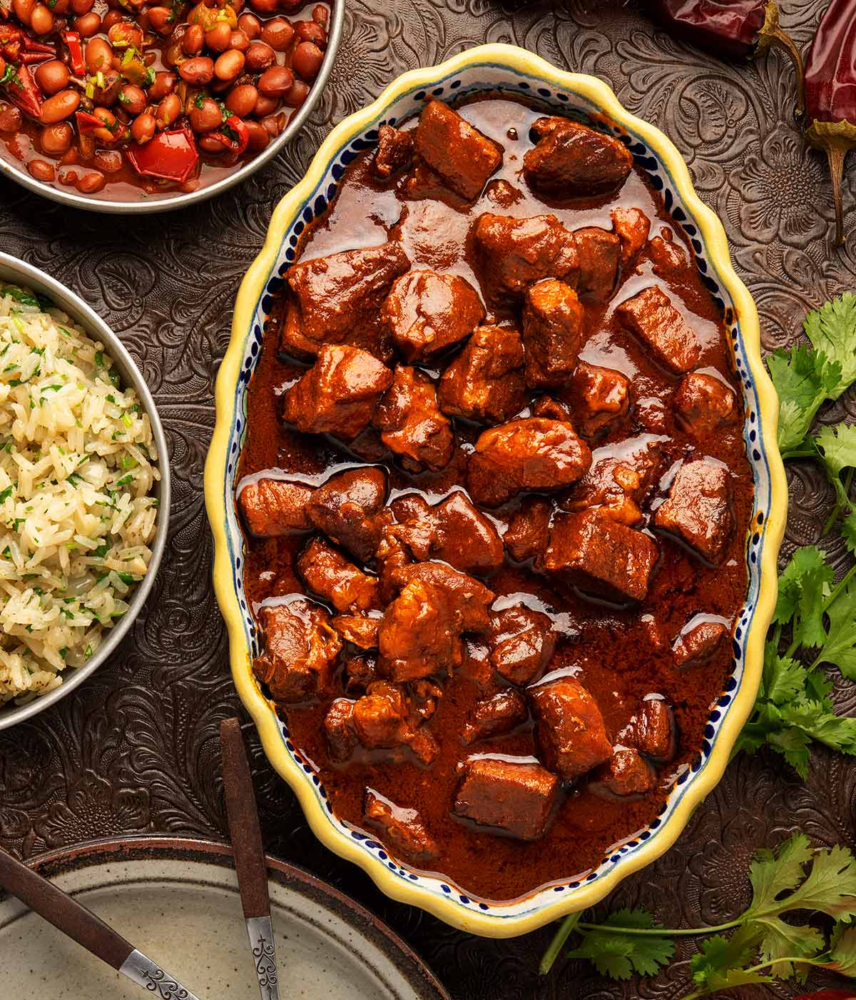

ASADO

Asado is a traditional Argentinian barbecue centered around slow-cooked beef grilled over charcoal or wood fire. It is known for its rich smoky flavor, simple seasoning, and tender texture. Asado is more than a meal in Argentina; it is a social gathering that brings family and friends together.
Ingredients:
- 2 lbs (900 g) beef short ribs or flank steak
- 2 tbsp coarse salt
- 1 tbsp black pepper
- 2 tbsp olive oil
- 1 tbsp minced garlic (optional)
- Chimichurri sauce for serving
Steps to follow:
- Preheat a charcoal grill or barbecue to medium heat.
- Pat the beef dry and rub it with olive oil, salt, and black pepper.
- Place the meat on the grill away from direct high flames.
- Cook slowly for 45 to 60 minutes, turning occasionally, until the meat is tender and cooked to your liking.
- Remove the beef from the grill and let it rest for 10 minutes.
- Slice the meat against the grain.
- Serve hot with chimichurri sauce and your favorite side dishes.